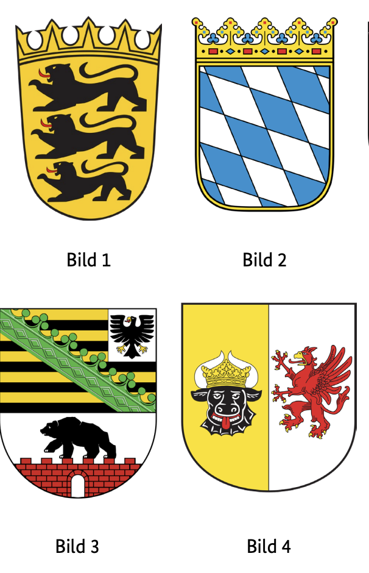
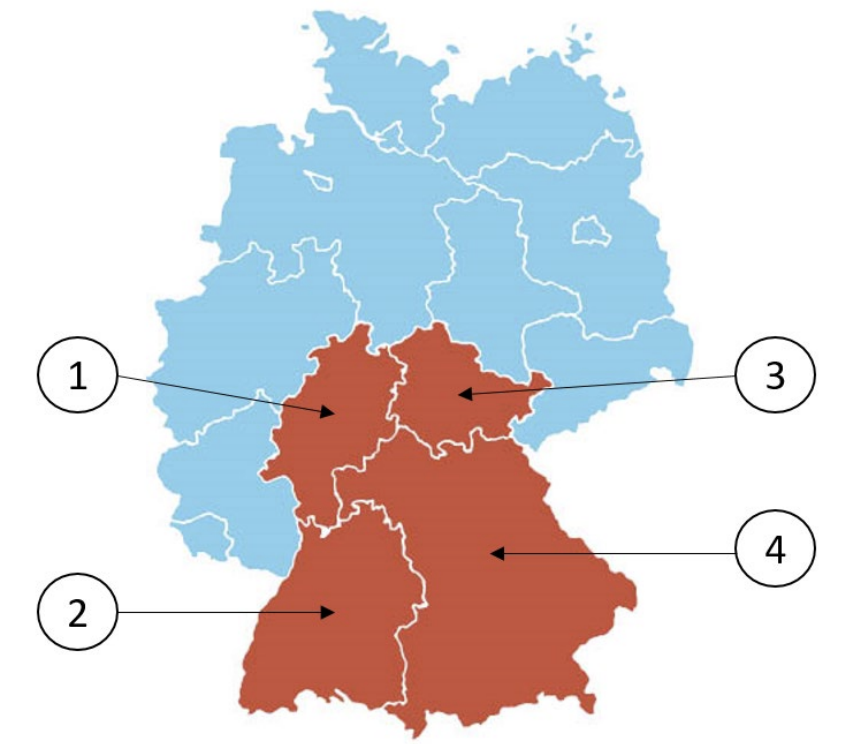

Resmi BAMF soru havuzundaki 10 Bayern (BY) eyalet sorusunun Almanca ve Türkçe açıklamalı interaktif çözümleri. Soru üzerine tıklayarak bilginizi anında test edin.
Almanya vatandaşlık ve kalıcı oturum için yapılan Leben in Deutschland (LiD) sınavında adaya toplam 33 çoktan seçmeli soru sorulur:
30 Genel Soru: Demokrasi, hukuk, tarih ve toplumsal yaşam (300 genel soru havuzundan).
3 Eyalet Sorusu: İkamet ettiğiniz eyalete özel tarih, coğrafya ve anayasa soruları (Aşağıdaki 10 eyalet sorusu havuzundan).
Sınavı geçmek için 33 sorudan en az 15 doğru (Vatandaşlık şartı) veya 17 doğru (Oryantasyon kursu başarı sertifikası) yapmanız gerekmektedir.
📝 10 Resmi Bayern Sorusunu Çözün
Soru #311 (1 / 10)Federal Eyalet: Bayern
Welches Wappen gehört zum Freistaat Bayern?
TR: Bavyera Özgür Devleti'ne hangi arma aittir?

✅ Doğru Cevap: Şık B (Bild 2)
Bu görevde, arma numaralı birkaç görüntü göreceksiniz. Her arma farklı bir Alman devletine veya tarihi bölgesine aittir. Görevleri, Bavyera Özgür Devleti'nin resmi armasını tipik semboller, renkler ve desenler temelinde tanımamaktır. Bavyera devlet armasına karşılık gelen numarayı seçin.
In dieser Aufgabe sehen Sie mehrere nummerierte Abbildungen von Wappen. Jedes Wappen gehört zu einem anderen deutschen Bundesland oder einer historischen Region. Ihre Aufgabe ist es, anhand der typischen Symbole, Farben und Muster das offizielle Wappen des Freistaats Bayern zu erkennen. Wählen Sie die Nummer aus, die dem bayerischen Landeswappen entspricht.
In this task, you will see several numbered images of coats of arms. Each coat of arms belongs to a different German state or historical region. Their task is to recognize the official coat of arms of the Free State of Bavaria based on the typical symbols, colors and patterns. Select the number that corresponds to the Bavarian state coat of arms.
في هذه المهمة، سترى عدة صور مرقمة لشعارات النبالة. كل شعار نبالة ينتمي إلى ولاية ألمانية مختلفة أو منطقة تاريخية مختلفة. مهمتهم هي الاعتراف بالشعار الرسمي لولاية بافاريا الحرة بناء على الرموز والألوان والأنماط النموذجية. اختر الرقم الذي يتوافق مع شعار ولاية بافاريا.
У цьому завданні ви побачите кілька пронумерованих зображень гербів. Кожен герб належить різній німецькій землі або історичному регіону. Їхнє завдання — визнати офіційний герб Вільної держави Баварія на основі типових символів, кольорів і візерунків. Виберіть номер, що відповідає гербу держави Баварія.
Soru #312 (2 / 10)Federal Eyalet: Bayern
Welches ist ein Landkreis in Bayern?
TR: Bavyera'da hangi bir ilçe?
✅ Doğru Cevap: Şık D (Altötting)
Soru, Almanya'daki idari bölgelere atıfta bulunmaktadır. Almanya, federal eyaletlere ayrılmış, bu eyaletler ise bölgelere veya bağımsız şehirlere ayrılmıştır. Bavyera, 16 federal eyaletten biridir ve bu eyalet içinde birkaç bölge bulunmaktadır. Cevap seçeneklerinde çeşitli bölgeler adı veriliyor, bazıları diğer federal eyaletlerde de bulunuyor. Amaç, bahsedilen seçeneklerden hangisinin Bavyera eyaletinde bir ilçe olduğunu belirlemektir.
Die Frage bezieht sich auf Verwaltungsregionen in Deutschland. Deutschland ist in Bundesländer gegliedert, die wiederum in Landkreise oder kreisfreie Städte unterteilt sind. Bayern ist eines der 16 Bundesländer, und es gibt mehrere Landkreise innerhalb dieses Bundeslandes. Die Antwortmöglichkeiten nennen verschiedene Regionen, von denen einige in anderen Bundesländern liegen. Ziel ist es zu erkennen, welche der genannten Optionen ein Landkreis im Bundesland Bayern ist.
The question refers to administrative regions in Germany. Germany is divided into federal states, which in turn are divided into districts or independent cities. Bavaria is one of the 16 federal states, and there are several districts within this state. The answer options name various regions, some of which are located in other federal states. The aim is to identify which of the options mentioned is a district in the state of Bavaria.
السؤال يتعلق بالمناطق الإدارية في ألمانيا. تنقسم ألمانيا إلى ولايات اتحادية، والتي بدورها مقسمة إلى مناطق أو مدن مستقلة. بافاريا هي واحدة من 16 ولاية اتحادية، وهناك عدة مناطق ضمن هذه الولاية. خيارات الإجابة تذكر مناطق مختلفة، بعضها يقع في ولايات اتحادية أخرى. الهدف هو تحديد أي من الخيارات المذكورة هو منطقة في ولاية بافاريا.
Питання стосується адміністративних регіонів Німеччини. Німеччина поділена на федеральні землі, які, у свою чергу, поділяються на райони або незалежні міста. Баварія є однією з 16 федеральних земель, і в межах цієї землі є кілька округів. Варіанти відповідей називають різні регіони, деякі з яких розташовані в інших федеральних землях. Мета полягає в тому, щоб визначити, який із зазначених варіантів є районом у землі Баварія.
Soru #313 (3 / 10)Federal Eyalet: Bayern
Für wie viele Jahre wird der Landtag in Bayern gewählt?
TR: Bavyera'daki eyalet parlamentosu kaç yıl boyunca seçilecek?
✅ Doğru Cevap: Şık C (5)
Almanya'da eyaletler, kendi parlamentolarına sahip kendi siyasi varlıklarıdır; sözde devlet parlamentoları olarak adlandırılır. Bu parlamentolar vatandaşlar tarafından düzenli aralıklarla seçilir. Seçim süresi yasayla belirlenir ve eyaletten eyalete değişebilir. Soru özellikle Bavyera eyalet parlamentosu ve yasama süresiyle ilgilidir.
In Deutschland sind die Länder eigene politische Einheiten mit eigenen Parlamenten, den sogenannten Landtagen. Diese Parlamente werden in regelmäßigen Abständen von den Bürgerinnen und Bürgern gewählt. Die Dauer einer Wahlperiode ist dabei gesetzlich festgelegt und kann sich von Bundesland zu Bundesland unterscheiden. Die Frage bezieht sich speziell auf den Bayerischen Landtag und die Länge seiner Legislaturperiode.
In Germany, the states are their own political entities with their own parliaments, the so-called state parliaments. These parliaments are elected at regular intervals by the citizens. The duration of an electoral period is fixed by law and can differ from state to state. The question relates specifically to the Bavarian state parliament and the length of its legislative period.
في ألمانيا، الولايات هي كيانات سياسية مستقلة لها برلماناتها الخاصة، ما يسمى بالبرلمانات الولائية. يتم انتخاب هذه البرلمانات على فترات منتظمة من قبل المواطنين. مدة فترة الانتخابات محددة قانونيا وقد تختلف من ولاية لأخرى. تتعلق المسألة تحديدا ببرلمان ولاية بافاريا ومدة فترة تشريعه.
У Німеччині землі є власними політичними утвореннями зі своїми парламентами, так званими земельними парламентами. Ці парламенти обираються громадянами з регулярними інтервалами. Тривалість виборчого періоду встановлена законом і може відрізнятися залежно від штату. Питання стосується конкретно баварського земельного парламенту та тривалості його законодавчого періоду.
Soru #314 (4 / 10)Federal Eyalet: Bayern
Ab welchem Alter darf man in Bayern bei Kommunalwahlen wählen?
TR: Bavyera'da yerel seçimlerde hangi yaştan itibaren oy kullanabilirsiniz?
✅ Doğru Cevap: Şık C (18)
Almanya'da, seçimlere farklı yasal düzenlemeler uygulanır ve bu düzenlemeler, seçim türüne ve federal eyalete bağlı olarak değişiklik gösterebilir. Özellikle yerel seçimlerde, bazı federal eyaletler gençlerin siyasete katılabilmesi için oy kullanma yaşını düşürdü. Aşağıdaki soru, özellikle Bavyera eyaletindeki yerel seçimlerde oy kullanma hakkı için verilen yaş sınırına atıfta bulunmaktadır.
In Deutschland gelten für Wahlen unterschiedliche gesetzliche Regelungen, die sich je nach Wahlart und Bundesland unterscheiden können. Besonders bei Kommunalwahlen haben einige Bundesländer das Wahlalter abgesenkt, um jüngeren Menschen politische Mitbestimmung zu ermöglichen. Die folgende Frage bezieht sich speziell auf die Altersgrenze für das aktive Wahlrecht bei Kommunalwahlen im Bundesland Bayern.
In Germany, different legal regulations apply to elections, which can differ depending on the type of election and the federal state. Especially in local elections, some federal states have lowered the voting age to enable younger people to participate in politics. The following question refers specifically to the age limit for the right to vote in local elections in the state of Bavaria.
في ألمانيا، تنطبق لوائح قانونية مختلفة على الانتخابات، والتي قد تختلف حسب نوع الانتخابات والولاية الفيدرالية. خاصة في الانتخابات المحلية، قامت بعض الولايات الفيدرالية بخفض سن التصويت لتمكين الشباب من المشاركة في السياسة. السؤال التالي يشير تحديدا إلى الحد العمري لحق التصويت في الانتخابات المحلية في ولاية بافاريا.
У Німеччині до виборів застосовуються різні правові норми, які можуть відрізнятися залежно від типу виборів і федеральної землі. Особливо на місцевих виборах деякі федеральні землі знизили вік для голосування, щоб молодь могла брати участь у політиці. Наступне питання стосується конкретно вікового обмеження для права голосу на місцевих виборах у землі Баварія.
Soru #315 (5 / 10)Federal Eyalet: Bayern
Welche Farben hat die Landesflagge von Bayern?
TR: Bavyera devlet bayrağı hangi renklere sahip?
✅ Doğru Cevap: Şık B (weiß-blau)
Soru, Alman devletleri ve onların resmi sembolleri hakkında bilgi edinmekle ilgilidir. Özellikle ulusal bayraklar, bölgesel kimliğin ve tarihin önemli bir parçasıdır. Almanya'da her eyaletin kendi renkleri ve bayrakları vardır; bunlar genellikle tarihi armalardan veya geleneklerden kaynaklanmaktadır. Doğru cevabı bulmak için, Bavyera Özgür Devleti'nin sembollerini ve tipik renklerini bilmelisiniz.
Die Frage bezieht sich auf Wissen über deutsche Bundesländer und ihre offiziellen Symbole. Besonders Landesflaggen sind ein wichtiger Teil der regionalen Identität und Geschichte. In Deutschland hat jedes Bundesland eigene Farben und Flaggen, die oft aus historischen Wappen oder Traditionen entstanden sind. Um die richtige Antwort zu finden, sollte man sich mit den Symbolen des Freistaats Bayern und seinen typischen Farben auskennen.
The question refers to knowledge about German states and their official symbols. National flags in particular are an important part of the regional identity and history. In Germany, each state has its own colors and flags, which often originated from historical coats of arms or traditions. To find the right answer, you should be familiar with the symbols of the Free State of Bavaria and its typical colors.
السؤال يتعلق بالمعرفة حول الدول الألمانية ورموزها الرسمية. الأعلام الوطنية على وجه الخصوص تشكل جزءا مهما من الهوية والتاريخ الإقليمي. في ألمانيا، لكل ولاية ألوانها وأعلامها الخاصة، والتي غالبا ما نشأت من شعارات أو تقاليد تاريخية. للعثور على الإجابة الصحيحة، يجب أن تكون على دراية برموز ولاية بافاريا الحرة وألوانها النموذجية.
Питання стосується знань про німецькі держави та їхні офіційні символи. Особливо національні прапори є важливою частиною регіональної ідентичності та історії. У Німеччині кожна земля має свої кольори та прапори, які часто походять із історичних гербів або традицій. Щоб знайти правильну відповідь, вам слід ознайомитися з символами Вільної держави Баварія та її типовими кольорами.
Soru #316 (6 / 10)Federal Eyalet: Bayern
Wo können Sie sich in Bayern über politische Themen informieren?
TR: Bavyera'daki siyasi konuları nereden öğrenebilirsiniz?
?
✅ Doğru Cevap: Şık B (bei der Landeszentrale für politische Bildung)
Almanya'daki hayat için önemli bir soru
Wichtige Frage für das Leben in Deutschland
Important question for life in Germany
سؤال مهم للحياة في ألمانيا
Важливе питання для життя в Німеччині
Soru #317 (7 / 10)Federal Eyalet: Bayern
Die Landeshauptstadt von Bayern heißt …
TR: Bavyera'nın eyalet başkenti ...
✅ Doğru Cevap: Şık D (München)
Soru, Almanya hakkında coğrafya ve genel bilgi alanından geliyor. Alman federal eyaletleri ve onların siyasi merkezleri anlamına gelir. "Eyalet başkenti", bir federal eyaletin hükümetinin bulunduğu şehri ifade eder. Bavyera, Almanya'nın 16 federal eyaletinden biridir ve seçilebilecek birkaç önemli şehir vardır.
Die Frage stammt aus dem Bereich Geografie und Allgemeinwissen über Deutschland. Sie bezieht sich auf die deutschen Bundesländer und deren politische Zentren. „Landeshauptstadt“ bezeichnet die Stadt, in der die Regierung eines Bundeslandes ihren Sitz hat. Bayern ist eines der 16 Bundesländer Deutschlands, und mehrere bedeutende Städte stehen zur Auswahl.
The question comes from the field of geography and general knowledge about Germany. It refers to the German federal states and their political centres. "State capital" refers to the city in which the government of a federal state has its seat. Bavaria is one of the 16 federal states of Germany, and there are several significant cities to choose from.
السؤال يأتي من مجال الجغرافيا والمعرفة العامة عن ألمانيا. يشير إلى الولايات الفيدرالية الألمانية ومراكزها السياسية. "عاصمة الولاية" تشير إلى المدينة التي يقع فيها مقر حكومة ولاية فيدرالية. بافاريا هي واحدة من 16 ولاية اتحادية في ألمانيا، وهناك عدة مدن مهمة للاختيار من بينها.
Питання походить із географії та загальних знань про Німеччину. Вона стосується німецьких федеративних земель та їхніх політичних центрів. «Столиця штату» означає місто, в якому розташований уряд федеральної землі. Баварія — одна з 16 федеральних земель Німеччини, і тут є кілька значущих міст на вибір.
Soru #318 (8 / 10)Federal Eyalet: Bayern
Welches Bundesland ist Bayern?
TR: Bavyera hangi eyalet?

✅ Doğru Cevap: Şık D (4)
Bu bağlamda, odak Almanya'nın siyasi coğrafyasına dair temel bilgilerdir. Soru, 16 federal eyaletin nasıl sınıflandırıldığını veya numaralandırıldığını bilip bilmediğinizi kontrol eder. Cevap seçeneklerine dayanarak, doğru Bavyera'nın eyaleti belirlenmelidir.
In diesem Kontext geht es um Grundwissen zur politischen Geografie Deutschlands. Die Frage prüft, ob man weiß, wie die 16 Bundesländer eingeordnet oder nummeriert sind. Anhand der Antwortmöglichkeiten soll das richtige Bundesland Bayern identifiziert werden.
In this context, the focus is on basic knowledge of Germany's political geography. The question checks whether you know how the 16 federal states are classified or numbered. Based on the answer options, the correct state of Bavaria is to be identified.
في هذا السياق، يتركز التركيز على المعرفة الأساسية بالجغرافيا السياسية لألمانيا. السؤال يتحقق مما إذا كنت تعرف كيف يتم تصنيف أو ترقيم الولايات الفيدرالية الستة عشر. استنادا إلى خيارات الإجابة، يجب تحديد الولاية الصحيحة لبافاريا.
У цьому контексті основна увага приділяється базовим знанням політичної географії Німеччини. Питання перевіряє, чи знаєте ви, як класифікуються або нумеруються 16 федеральних штатів. На основі варіантів відповіді слід визначити правильний штат Баварії.
Soru #319 (9 / 10)Federal Eyalet: Bayern
Wie nennt man die Regierungschefin / den Regierungschef in Bayern?
TR: Hükümet başkanına ne diyorsunuz?
Bavyera mı?
✅ Doğru Cevap: Şık D (Ministerpräsidentin / Ministerpräsident)
Almanya'daki hayat için önemli bir soru
Wichtige Frage für das Leben in Deutschland
Important question for life in Germany
سؤال مهم للحياة في ألمانيا
Важливе питання для життя в Німеччині
Soru #320 (10 / 10)Federal Eyalet: Bayern
Welche Ministerin / welchen Minister hat Bayern nicht?
TR: Bavyera'nın hangi bakanı yok?
✅ Doğru Cevap: Şık B (Außenministerin / Außenminister)
Almanya'da, federal eyaletlerin farklı bakanlıkları olan kendi eyalet hükümetleri vardır. Ancak, bunlar federal düzeydeki bakanlıklarla aynı değildir. İçişleri, Maliye veya Adalet gibi bazı bakanlıklar genellikle eyaletlerin kendi tarafından yönetilirken, diğer sorumluluk alanları tamamen Federal Hükümet'in sorumluluğundadır. Soruyu anlamak için, Bavyera gibi bir devletin hangi bakanlıklara sahip olabileceğini ve hangilerinin olmayacağını bilmelisiniz.
In Deutschland haben die Bundesländer eigene Landesregierungen mit verschiedenen Ministerien. Diese sind jedoch nicht identisch mit den Ministerien auf Bundesebene. Während bestimmte Ressorts wie Inneres, Finanzen oder Justiz typischerweise von den Ländern selbst verwaltet werden, liegen andere Aufgabenbereiche ausschließlich in der Zuständigkeit des Bundes. Um die Frage zu verstehen, sollte man wissen, welche Ministerien ein Bundesland wie Bayern haben kann und welche nicht.
In Germany, the federal states have their own state governments with different ministries. However, these are not identical with the ministries at the federal level. While certain ministries such as Interior, Finance or Justice are typically administered by the Länder themselves, other areas of responsibility are exclusively the responsibility of the Federal Government. To understand the question, you should know which ministries a state like Bavaria can have and which cannot.
في ألمانيا، لدى الولايات الفيدرالية حكوماتها الخاصة مع وزارات مختلفة. ومع ذلك، هذه الوزارات ليست مطابقة للوزارات على المستوى الفيدرالي. بينما تدار بعض الوزارات مثل الداخلية أو المالية أو العدل عادة من قبل الولايات نفسها، فإن مجالات المسؤولية الأخرى تقع حصريا على عاتق الحكومة الفيدرالية. لفهم السؤال، يجب أن تعرف أي الوزارات يمكن أن تمتلكها دولة مثل بافاريا وأيها لا يمكنها.
У Німеччині федеральні землі мають власні уряди з різними міністерствами. Однак це не ідентичні міністерствам на федеральному рівні. Хоча деякі міністерства, такі як внутрішні справи, фінанси чи юстиція, зазвичай адмініструються самими землями, інші сфери відповідальності належать виключно федеральному уряду. Щоб зрозуміти питання, потрібно знати, які міністерства може мати така держава, як Баварія, а які — ні.
300 Genel Soruyu ve Eyalet Sorularını Eksiksiz Çalışın
DeutschLernen LiD Trainer'da tüm 310 soruyu 5 farklı dilde (Türkçe, İngilizce, Arapça, Ukraynaca, Almanca) çözebilir, deneme sınavı simülasyonu yapabilirsiniz.